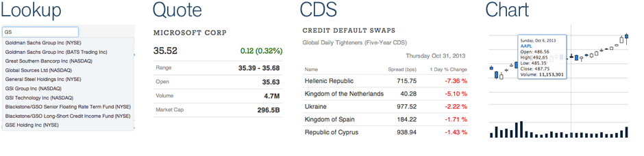
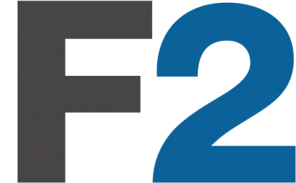

FinTech Hackathon NYC November 2013
We have 4 market data APIs and a web integration framwork available for the event this weekend. Actually, they're always available. Free.
Find the docs at dev.markitondemand.com. The available APIs are:
- Company / Symbol Lookup
- Stock Quote
- Sovereign Credit Default Swaps Daily Movers
- Interactive Chart / Timeseries
Create
Build Using F2
F2 is an open and free web integration framework designed to help the financial services community develop custom web and mobile applications. Build it once, deploy it to any F2-enabled site.
- Web container & app framework
- Simplified integration of multiple parties
- “Context”—pub/sub messaging
- Bootstrap for RWD & consistent appearance (not themes!)
- On GitHub.com/OpenF2
Getting Started is Simple
<script src="//cdnjs.cloudflare.com/ajax/libs/F2/1.3.0/f2.min.js"></script>
Build Your App
Develop HTML, JS, and CSS as you would normally, then create an F2 AppManifest (example).
Register App with F2
$(function(){
F2.init();
F2.registerApps({
appId: 'com_your_fintech_app',
manifestUrl: './appManifest.js'
});
});
Find the docs, example containers and apps, and more:
docs.openf2.org
Presented by MOD/Labs
 Our partnership with the FinTech Hackathon is presented by Markit On Demand Labs (MOD/L). MOD/L was founded earlier this year to enhance existing capabilities, create new solutions, and foster innovation across our organization. We recognize that innovation is as much the creation of original ideas as it is the recognition and dissemination of existing progressive concepts and methods within our broader organization.
Our partnership with the FinTech Hackathon is presented by Markit On Demand Labs (MOD/L). MOD/L was founded earlier this year to enhance existing capabilities, create new solutions, and foster innovation across our organization. We recognize that innovation is as much the creation of original ideas as it is the recognition and dissemination of existing progressive concepts and methods within our broader organization.
MOD/L is working on range of projects including implementing SPDY, next-generation web & mobile charting, content personalization, and more.
About Markit On Demand
 Markit On Demand (MOD), is a design driven technology company based in Boulder, Colorado. We’re a Solutions business within Markit, a global financial information company that’s headquartered in London. In Boulder, where the sun shines 300 days a year, we have a team of 400+ professionals dedicated to the presentation of financial content and data for our clients in the Financial Services, Media and Healthcare industries.
Markit On Demand (MOD), is a design driven technology company based in Boulder, Colorado. We’re a Solutions business within Markit, a global financial information company that’s headquartered in London. In Boulder, where the sun shines 300 days a year, we have a team of 400+ professionals dedicated to the presentation of financial content and data for our clients in the Financial Services, Media and Healthcare industries.
We’re Hiring
Questions?
Tweet us @markitondemand using hashtag #fintech with questions or issues using our API.